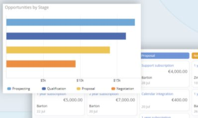
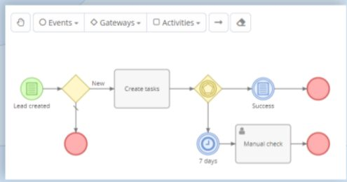
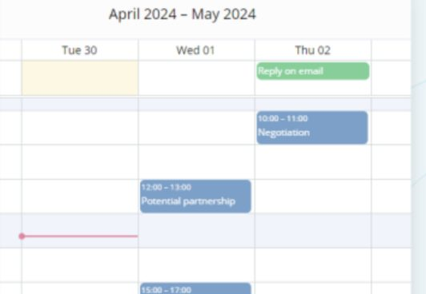
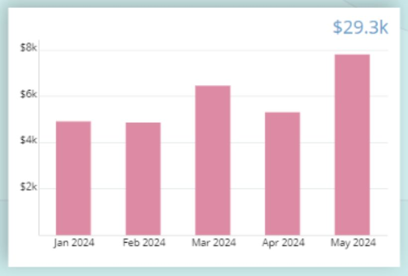

Início › Plataformas › EspoCRM
CRM · EspoCRM · open source
Um CRM que o time comercial usa de verdade.
Funil por linha de negócio, histórico completo do cliente, propostas, agenda e automações de follow-up. O EspoCRM é aberto e leve, e implantamos em português, com custo em real e integrado ao ERP.

Para quem é
Para vendas consultivas e de ciclo longo.
Empresas B2B que vendem projeto, equipamento ou serviço técnico e precisam de disciplina no funil sem pagar caro por usuário.
Hoje: Previsão de vendas no “achismo”. O CRM atual custa em dólar e ninguém atualiza.
Com EspoCRM: Funil ponderado por etapa, metas por vendedor e previsão do trimestre.
Hoje: Histórico do cliente espalhado em e-mails e WhatsApp.
Com EspoCRM: E-mails, reuniões, propostas e chamados na ficha do cliente.
Hoje: Reclamação chega por qualquer canal e se perde.
Com EspoCRM: Casos com prazo, responsável e base de conhecimento.
Módulos e funcionalidades
O que entregamos no EspoCRM
Configuramos entidades, campos, layouts e permissões para o seu processo comercial. Quando o escopo pede, usamos as extensões oficiais da EspoCRM.
Leads e contas
Captação de leads, qualificação e conversão em conta, contato e oportunidade.
Formulários web, origem de lead e regras de distribuição.
Oportunidades e funil
Etapas, probabilidade, valor e previsão por vendedor e linha.
Pipelines por linha de negócio e motivos de perda.
E-mail e agenda
Caixa de e-mail integrada, reuniões, ligações e tarefas no calendário.
Contas IMAP/SMTP, modelos de e-mail e lembretes.
Casos e base de conhecimento
Chamados de pós-venda com prazo e artigos de solução.
Filas por produto e acordos de nível de serviço.
Campanhas
Listas segmentadas, e-mail marketing e rastreio de abertura.
Segmentos por setor, porte e histórico de compra.
Relatórios e painéis
Advanced PackListas, gráficos e painéis por usuário.
Painel do gestor e relatórios de funil.
Fluxos e BPM
Advanced PackAutomação visual: follow-up, aprovação de desconto, onboarding.
Fluxos do seu processo com prazos e escalonamento.
Cotações e pedidos
Sales PackCotação com itens, impostos e PDF; pedido de venda.
Modelos de cotação ou envio ao Dolibarr.
API e webhooks
Integração com ERP, site, WhatsApp e telefonia.
Conectores com Dolibarr, formulários e IA.
Relatórios avançados, fluxos/BPM e cotações fazem parte das extensões pagas da EspoCRM (Advanced Pack e Sales Pack), contratadas pelo cliente quando o escopo exigir. Muitas empresas começam só com o núcleo gratuito.
Processo de ponta a ponta
Do primeiro contato ao cliente recorrente.
O funil B2B que configuramos como ponto de partida e ajustamos ao seu ciclo de venda.
Site, feira, indicação ou WhatsApp entram com a origem registrada.
EspoCRMPerfil, necessidade e decisor confirmados.
EspoCRMValor, etapa e probabilidade alimentam a previsão.
EspoCRMCotação técnica e comercial com aprovação de desconto.
EspoCRM · DolibarrPedido criado no ERP sem redigitação.
DolibarrCasos, satisfação e nova oportunidade.
EspoCRMTelas e estrutura
Telas do EspoCRM



Integrações
EspoCRM integrado ao ERP e aos canais
Integrações por API, com fila e registro de cada troca. Se algo falha, a mensagem fica retida e você recebe um alerta. Nada se perde no caminho.
Oportunidade ganha vira cliente e pedido. Faturamento e inadimplência aparecem na ficha do cliente.
Leads entram com origem e campanha, já distribuídos ao vendedor.
Conversas registradas no histórico do cliente.
Pedido especial gera solicitação de engenharia com o contexto comercial.
Funil, conversão, ciclo de venda e previsão consolidados com o faturamento.
Ligações registradas e gravadas na oportunidade, conforme o provedor.
Inteligência artificial e BI
Vendedor mais preparado, gestor com previsão confiável.
IAAssistentes e automações
- Resumo antes da reunião: histórico, pedidos, chamados e últimas conversas em um parágrafo.
- Pontuação de leads: prioriza quem tem perfil e sinais de compra.
- Rascunho de proposta: texto técnico-comercial a partir da conversa e do catálogo.
- Próximo passo sugerido: alerta de oportunidade parada e sugestão de ação.
- Registro automático: e-mails e transcrições de reunião viram atividades no CRM.
Integração com IA: R$ 6.900 de setup + R$ 290/mês, mais o consumo de API do modelo, repassado sem margem. As respostas respeitam o perfil de acesso de quem pergunta e não treinam modelos de terceiros. Como funciona a IA
BIIndicadores entregues
- Funil ponderado por etapa, vendedor e linha de negócio.
- Taxa de conversão lead → oportunidade → pedido.
- Ciclo de venda dias médios por etapa e por porte de cliente.
- Previsão do trimestre comparada com a meta e o faturado.
- Motivos de perda por concorrente, preço e prazo.
BI de dados: R$ 2.900 de setup + R$ 490/mês. Painéis em Metabase ou Power BI, com alertas por e-mail e WhatsApp. Exemplo de painel
Infraestrutura
Leve e rápido, no seu subdomínio.
O EspoCRM roda em Linux com PHP e MySQL/MariaDB e pede pouco servidor. Pode dividir a mesma VM com o Dolibarr e o OpenProject, com bancos separados e backup diário.
Dimensionamento recomendado
| Uso | Ambiente | Mensal |
|---|---|---|
| Até 15 usuários | Servidor Zirconium P ou VM P | R$ 190 a 290 |
| 15 a 50 usuários | VM M · 4 vCPU / 8 GB | R$ 540 |
| Junto com ERP e Projetos | VM M (stack completa) | R$ 540 |
| Dados na empresa | Servidor local gerenciado | R$ 390 |
Setup de ambiente R$ 690 (uma vez). Envio de e-mail marketing em volume usa provedor externo, como o Brevo.
Implantação
Funil rodando em quatro semanas.
Começamos pelo funil e pela ficha do cliente, que é o que o time usa todo dia. Automações e relatórios entram depois, com dados reais.
Entregáveis
- EspoCRM configurado para o seu funil
- Contatos e oportunidades migrados
- Caixas de e-mail e agenda integradas
- Automações de follow-up
- Integração com o ERP
- Painel do gestor e treinamento do time
Etapas do funil, campos, motivos de perda e regras de distribuição.
Importação de contatos e oportunidades, caixas de e-mail e agenda.
Follow-ups, aprovações e ligação com o ERP.
Painel do gestor, treinamento do time e acompanhamento da primeira semana.
Investimento
EspoCRM: custo em real, previsível.
Preço fechado por projeto, depois do diagnóstico. Setup pago 50% na assinatura e 50% na entrega.
| Serviço | Modelo | Preço |
|---|---|---|
| Implantação Essencial (1 sistema, até 10 usuários, ~40 h) | Projeto | R$ 6.900 |
| Implantação Integrada (ERP + CRM + Projetos, ~100 h) | Projeto | R$ 16.900 |
| Banco de 20 h de customização | Pré-pago | R$ 3.400 |
| Treinamento (4 h, até 8 pessoas) | Avulso | R$ 1.200 |
| Suporte Básico (4 h) / Pro (10 h) | Assinatura | R$ 690 / R$ 1.590 por mês |
| Sustentação por usuário | Assinatura | R$ 25/usuário/mês (mín. R$ 250) |
| Hora técnica | Avulso | R$ 180/h |
| Integração com IA | Setup + assinatura | R$ 6.900 + R$ 290/mês |
Extensões oficiais da EspoCRM (Advanced Pack, Sales Pack), quando necessárias, são contratadas pelo cliente diretamente com o fabricante.
Dúvidas
Perguntas sobre EspoCRM
O EspoCRM está em português?
Sim, a interface tem tradução para português, e ajustamos os termos ao vocabulário do seu time.
Preciso das extensões pagas?
Não para começar. Funil, contatos, e-mail, agenda e casos estão no núcleo gratuito. Relatórios avançados, BPM e cotações entram quando o processo pedir.
Integra com WhatsApp?
Sim, por meio de provedores com API oficial do WhatsApp Business. As conversas ficam no histórico do cliente.
Consigo importar do meu CRM atual?
Sim. Exportamos contatos, contas, oportunidades e atividades e importamos com limpeza de duplicados.
Vamos organizar o seu funil?
Diagnóstico gratuito de 45 minutos. Respondemos em até 1 dia útil.